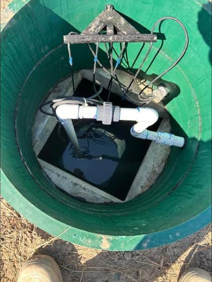

From a routine pump out to a full engineered system replacement. One licensed crew, one point of contact, one invoice.

New systems designed and installed to NC and VA code: conventional, pump, and alternative. Level 4 certified, so we can install the engineered systems most contractors have to sub out.

Cracked tank lids, failed pumps, collapsed lines, broken risers. We dig it, diagnose it honestly, and fix it right the first time.

Routine pump outs and full maintenance on a schedule that keeps your system out of trouble. Same day service when we can fit you in.

Soggy yards, backed up lines, failing fields. We repair and replace drainfields and expand existing fields when a home outgrows its system.

Inspections for buyers, sellers and lenders, with a straight answer about what you are dealing with: condition, capacity, and what it will cost to correct.

Certified Infiltrator products installer. Chamber style leach fields that handle tight lots and difficult soils better than rock and pipe.

Traditional gravel and pipe drainfields installed to spec when that is the right call for the site and the soil.

Ditching, drainage, grading and site work. Northeastern NC is flat and wet, so moving water off a property is half the battle.
For most households, every 3 to 5 years. Pump sooner if you have a small tank, a large family, or a garbage disposal. If you cannot remember the last time your tank was pumped, it is time. Stuarts Septic & Land can work out a schedule based on your tank size and how many people live in the house.
Slow drains throughout the house, gurgling in the pipes, sewage odor near the tank or drainfield, standing water or unusually green grass over the tank, and backups in the lowest drains first. If sewage is backing up indoors, stop running water and call right away.
Soggy ground or unusually green patches over the field, slow drains throughout the house, gurgling, sewage odor outside, or backups after heavy rain. Catching it early is often the difference between a repair and a full replacement, so it is worth having it looked at as soon as you notice any of these.
Call Stuarts Septic & Land at (252) 489-8773. We are open for emergencies 24/7 and we triage backups, overflows and failed pumps ahead of routine work. Tell us what you are seeing when you call and we will tell you what happens next.
It depends on the soil, the lot, the number of bedrooms and whether the county requires a conventional or an engineered alternative system. There is no honest way to quote one without seeing the property, so we come out, look at the site and give you a written price. Estimates are free.
Most residential installations are a two to three day job once the permit is in hand, though weather and soil conditions can stretch that. Permitting through the county health department usually takes longer than the installation itself.
Yes. New installations and most repairs go through the county health department, and we run that process as part of the job. You do not need to file anything yourself.
A conventional system uses gravity to move effluent into a gravel or chamber drainfield. An alternative system uses pumps, engineered media or a different field design when the soil, the water table or the size of the lot will not support a conventional one. Tyler Stuart holds a North Carolina Level 4 installer license, which is the classification required to install engineered and alternative systems.
It is a drainfield built from plastic arch chambers instead of gravel and pipe. The open chamber holds more effluent and needs less trench length, which makes it a good fit for tight lots and difficult soils common along the coast. Stuarts Septic & Land is a certified Infiltrator products installer.
We do. If you are buying or selling, we will inspect the system and give you a clear picture of its condition, its capacity and the cost of any corrections. Buyers get a straight answer about what they are taking on.
Often yes. Expanding from a three bedroom to a four bedroom system is one of the more common jobs we do. Whether it is possible depends on soil, lot size and setbacks, so it starts with a site visit.
Ten counties across northeastern North Carolina: Currituck, Dare, Camden, Pasquotank, Chowan, Gates, Hyde, Beaufort, Tyrrell and Pitt. We also work across the line into southeastern Virginia. Call if you are not sure about your address.
Describe the symptoms and we will tell you what is likely going on, and what it should cost to fix. No charge for the conversation.
Open for emergencies 24/7 ☎ Call (252) 489-8773